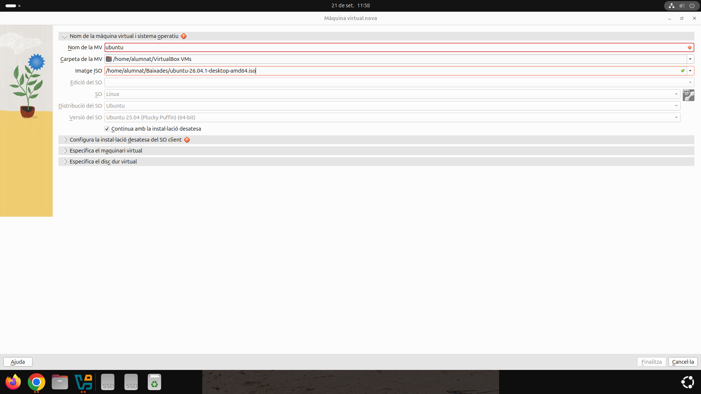
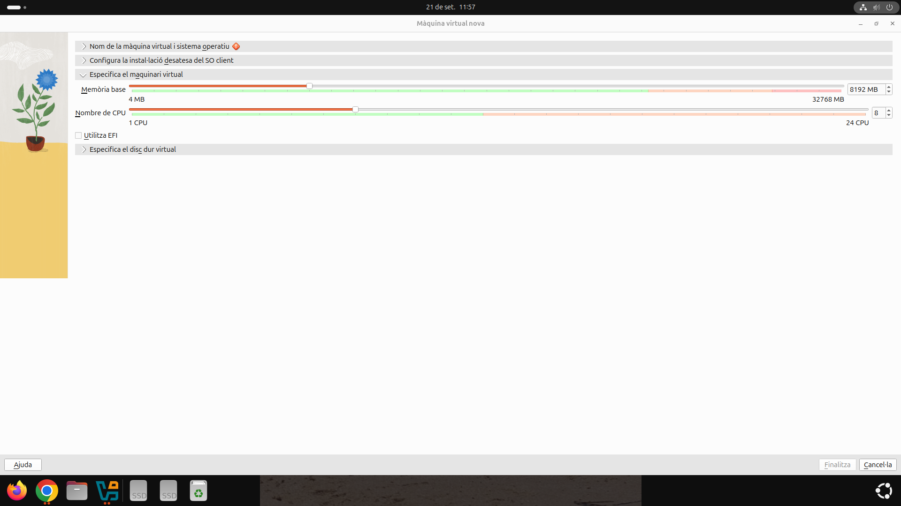
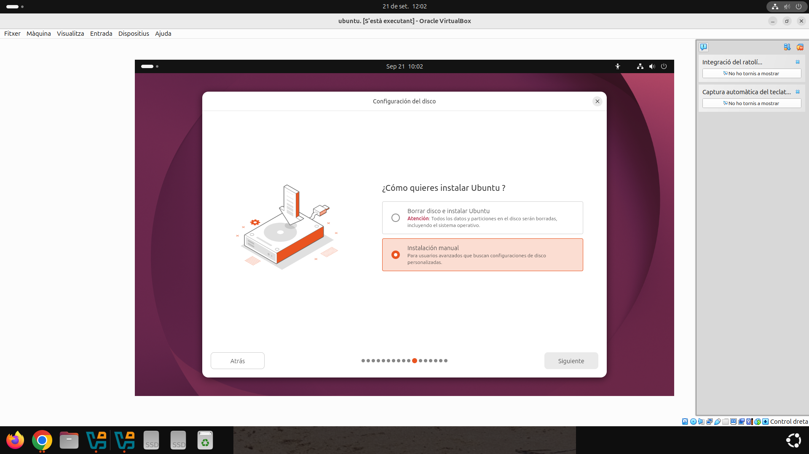
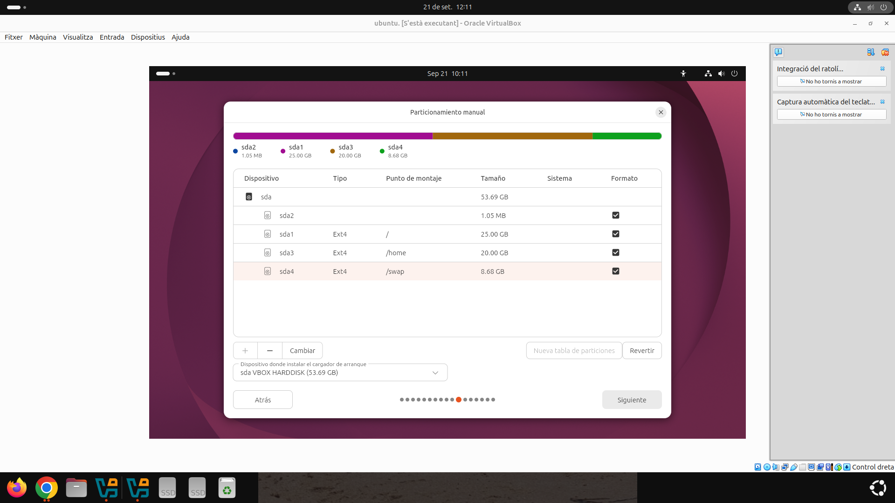
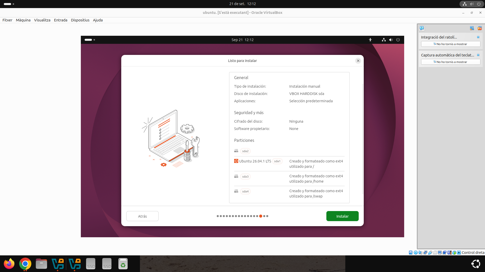

1. Instal·lació del sistema operatiu
Per començar la pràctica, he creat una màquina virtual amb VirtualBox i he seleccionat una imatge ISO d'Ubuntu per realitzar la instal·lació del sistema operatiu.

Configuració dels recursos
Abans d'iniciar la instal·lació, he assignat 8 GB de memòria RAM a la màquina virtual perquè el sistema funcione de manera més fluida.

Instal·lació manual
He seleccionat l'opció d'instal·lació manual per poder configurar les particions del disc.

Particionament del disc
He realitzat el particionament manual del disc, creant una partició de 25 GB per al sistema (/), una partició de 20 GB per a /home i una partició de 8,68 GB per a /swap.

Comprovació final de la instal·lació
Abans d'iniciar la instal·lació, he revisat la configuració i les particions creades per comprovar que tot estava correcte.

Una vegada finalitzada la instal·lació, el sistema Ubuntu s'ha iniciat correctament.